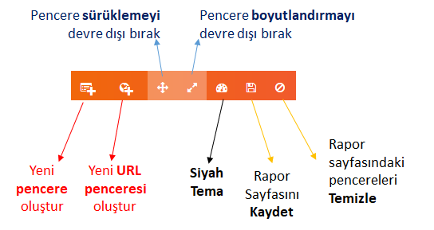
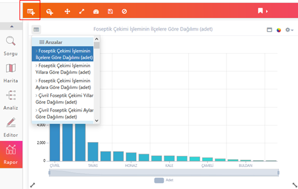
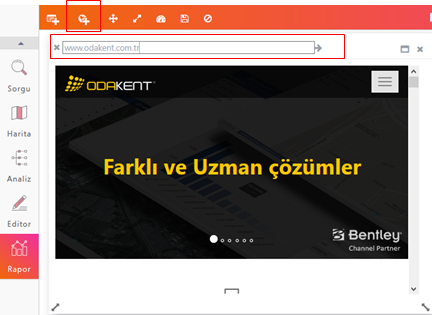
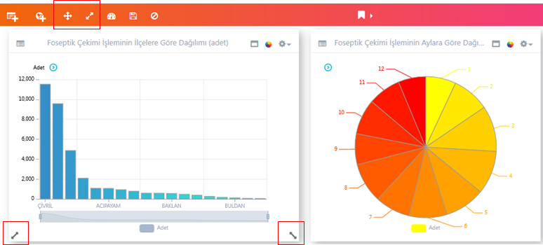
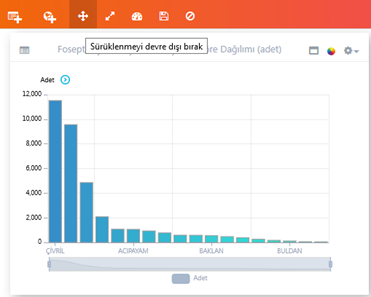
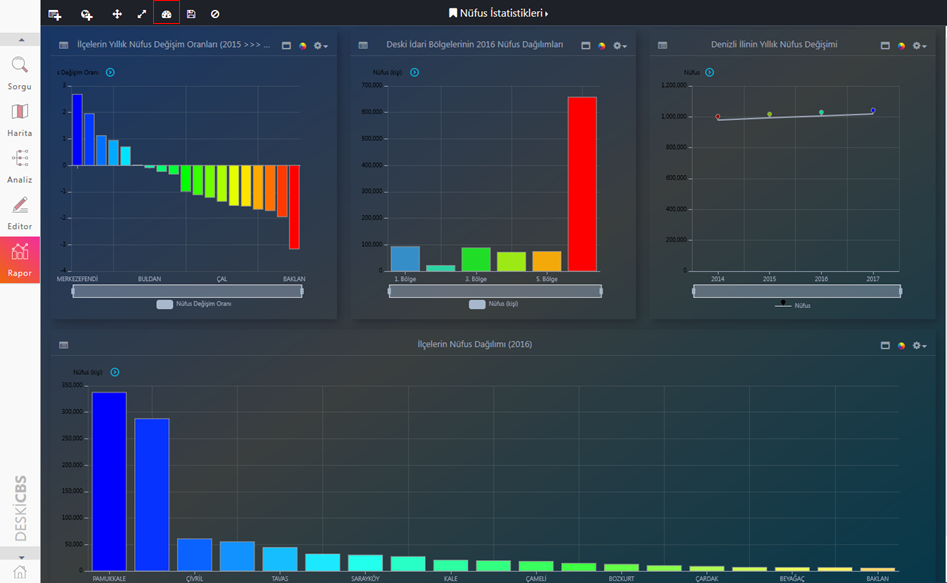
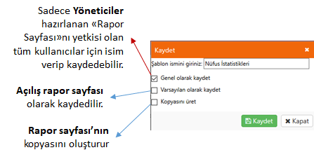

ODAGIS+ Web/Mobil arayüzünde Rapor aracı vasıtasıyla Yönetici arayüzünden istenilen Rapor/Gösterge Panelleri(Dashboard) oluşturularak, ilgili kullanıcı veya kullanıcı gruplarına açılabilir. Benzer şekilde tüm kullanıcılar kendilerine ait rapor sayfalarını/gösterge panellerini oluşturabilirler.
Yeni Rapor Sayfası Oluşturma ve Düzenleme
1- Rapor Sayfası (Dashboard) oluşturmak için Başlık çubuğunun sol kısmında yer alan butonlar kullanılır.
2- Rapor Sayfasında yeni pencere iki farklı şekilde oluşturulmaktadır.
- Standart Pencere
- URL Penceresi

3- Yeni Pencere oluşturulduğunda başlık çubuğunun sol üst kısmında yer alan butona basıldığında Yönetici Panelinde hazırlanan ve o kullanıcıya kullanım izni verilen "Grafik/Tablo" isimleri listelenmektedir. Bu listedeki "Grafik/Tablo"lardan bir tanesi seçilerek pencerede görüntülenir. Rapor sayfası kaydedildiğinde penceredeki grafik aynen kaydedilmiş olur.

4- Yeni URL Penceresi oluşturulduğunda başlık çubuğunda yer alan adres çubuğuna URL adresi yazılabilir. Yazılan adres "enter" tuşuna veya "ok" butonuna basarak pencere içerisinde web sayfası görüntülernir. Rapor sayfası kaydedildiğinde penceredeki grafik aynen kaydedilmiş olur.

5- Pencerelerin farklı bir konuma sürüklenmesi veya pencere boyutlarının değiştirilmesi rapor başlık çubuğundaki iki buton vasıtasıyla yapılabilmektedir. Bu butonlar vasıtasıyla Rapor Sayfası kullanıcının istediği şekilde düzenlenip kaydedilir.

Not: Herbir butonun üzerinde ipucu açıklamaları bulunmaktadır.

5- Siyah tema için menüdeki işaretli düğmeye basılır. Temayı kaldırmak için yine aynı butona basılır.

6- Kaydet butonuna basıldığında açılan formda sırasıyla Şablona isim verme, isim değiştirme, rapor sayfasını tüm kullanıcılar için kaydetme, açılış rapor sayfasını ayarlama, benzer rapor sayfası oluşturma işlemleri yapılabilmektedir.
 Tüm kullanıcılar kendilerine özel Rapor Sayfası oluşturabilmekte, sayfayı düzenleyebilmekte ve kaydedip saklayabilmektedir. Yönetici haklarına sahip kullanıcılar oluşturdukları Rapor Sayfalarını "Genel olarak kayded"ip daha sonra ODAGIS+ Yönetici Panelinden diğer kullanıcılarla paylaşabilmektedir.
Tüm kullanıcılar kendilerine özel Rapor Sayfası oluşturabilmekte, sayfayı düzenleyebilmekte ve kaydedip saklayabilmektedir. Yönetici haklarına sahip kullanıcılar oluşturdukları Rapor Sayfalarını "Genel olarak kayded"ip daha sonra ODAGIS+ Yönetici Panelinden diğer kullanıcılarla paylaşabilmektedir.
